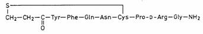

RÉSUMÉ DES CARACTÉRISTIQUES DU PRODUIT
ANSM - Mis à jour le : 14/10/2008
DESMOGALEN 10 microgrammes/dose, solution pour pulvérisation nasale
2. COMPOSITION QUALITATIVE ET QUANTITATIVE
Desmopressine ............................................................................................................... 100 microgrammes
Sous forme d'acétate de desmopressine trihydraté
Pour 1 ml de solution pour pulvérisation nasale.
1 pulvérisation de 0,1 ml contient 10 microgrammes d'acétate de desmopressine trihydraté.
Pour la liste complète des excipients, voir rubrique 6.1.
Solution pour pulvérisation nasale.
Solution claire incolore à odeur de chlorobutanol.
4.1. Indications thérapeutiques
· Traitement du diabète insipide central pitresso-sensible.
· Etude du pouvoir de concentration du rein.
4.2. Posologie et mode d'administration
Pour utilisation nasale.
Se moucher avant l'utilisation. Placer l'embout nasal dans la narine et presser une fois. Une pression délivre une dose de 10 microgrammes. Si des doses plus fortes sont prescrites, il est recommandé d'administrer la moitié de la dose dans chaque narine. Inspirer légèrement pendant la vaporisation.
· Diabète insipide d'origine centrale
|
|
Dose journalière |
Nombre de pulvérisations |
|
Adulte |
10 - 20 microgrammes |
1 - 2 |
|
Enfant |
5* - 10 microgrammes |
1 |
*5 microgrammes ne peuvent être administrés avec DESMOGALEN
En cas d'efficacité insuffisante, la dose peut être augmentée au cas par cas jusqu'à 40 microgrammes chez l'adulte et 20 microgrammes chez l'enfant.
La dose journalière doit être administrée en une à deux prises (le matin et, le cas échéant, au moment du coucher). La dose optimale de DESMOGALEN doit être établie au cas par cas et doit être basée sur des mesures du volume mictionnel et de l'osmolalité urinaire.
Le traitement vise à atteindre les deux objectifs suivants: l'équilibre du bilan hydrique et un temps de sommeil adéquat (à la suite de l'amélioration de la nycturie et de l'énurésie nocturne fréquemment associées au diabète insipide d'origine centrale).
· Etude du pouvoir de concentration du rein
|
Poids |
Dose intranasale |
Nombre de pulvérisations |
|
< 10 kg |
10 microgrammes |
1 |
|
10 - 30 kg |
20 microgrammes |
2 |
|
30 - 50 kg |
30 microgrammes |
3 |
|
> 50 kg |
40 microgrammes |
4 |
Ce test permet à la fois de distinguer le diabète insipide de polyuries d'autres étiologies et de déterminer la présence d'une diminution de la capacité de concentration du rein en raison d'infections des voies urinaires; il permet également le diagnostic précoce de lésions tubulo-interstitielles par exemple dues au lithium, aux analgésiques, aux produits de chimiothérapie ou aux immunosuppresseurs.
L'épreuve à la desmopressine doit avoir lieu de préférence le matin. L'apport de liquide doit être limité pendant les 12 premières heures suivant l'administration du médicament. Il doit notamment être réduit de 50 % chez les enfants de moins de 5 ans et chez les patients présentant des troubles cardiaques ou une hypertension artérielle.
Il est recommandé que la vessie soit vide au moment de l'administration.
L'osmolalité urinaire doit être déterminée une fois avant et deux fois après administration de desmopressine. L'urine recueillie au cours de la première heure doit être éliminée. L'osmolalité urinaire est déterminée à l'aide des deux échantillons d'urine suivants, prélevés de préférence deux heures et quatre heures après administration de desmopressine. Afin de déterminer la capacité de concentration du rein, la valeur la plus élevée est comparée à la valeur initiale ou à une valeur de référence spécifique à l'âge du patient.
Une augmentation substantielle de l'osmolalité urinaire associée à une diminution significative du volume mictionnel indiquent la présence d'un diabète insipide d'origine centrale. Des valeurs faibles, l'absence d'augmentation ou une faible augmentation de l'osmolalité urinaire indiquent une diminution de la capacité de concentration du rein.
La sécurité et l'efficacité de la desmopressine dans des populations de patients spécifiques (présentant une insuffisance rénale ou hépatique, ou une autre pathologie concomitante) n'ont pas été étudiées.
Instruction pour la manipulation:
Retirer le capuchon protecteur, tenir le flacon verticalement. La première fois, amorcer la pompe avec 4 ou 5 pressions, jusqu'à ce qu'il se forme une nébulisation homogène.
Pendant la pulvérisation, toujours tenir le flacon de façon à ce que le tuyau d'aspiration soit dirigé vers le bas et plonge dans la solution. Introduire l'embout dans une narine et presser une fois. Si des doses plus élévées sont nécessaires, changer de narine à chaque fois.
Replacer le capuchon protecteur après emploi et ranger le flacon en position debout.
Après 50 pulvérisations, la solution restant dans le flacon ne doit pas être utilisée. Il existe de fait un risque que le tube d'aspiration ne soit plus complètement immergé dans la solution, de telle sorte que la précision d'administration n'est plus assurée.
· Hypersensibilité à la desmopressine ou à l'un des excipients.
· Polydipsie primaire et polydipsie due à un abus d'alcool.
· Hyponatrémie.
· Insuffisance cardiaque et autres situations nécessitant un traitement par diurétiques.
· Syndrome de sécrétion inappropriée d'hormone anti-diurétique, car ce syndrome est associé à une hyponatrémie de dilution.
4.4. Mises en garde spéciales et précautions d'emploi
Il convient d'utiliser la desmopressine avec prudence chez les patients souffrant de coronaropathie, d'hypertension ou de déséquilibre hydro-électrolytique (par exemple patients atteints de mucoviscidose ou d'insuffisance rénale). L'utilisation de la desmopressine chez des patients présentant une insuffisance rénale peut augmenter le risque de rétention hydrique et d'hyponatrémie.
Un traitement par la desmopressine sans ajustement concomitant de l'apport en liquides peut entraîner une rétention de liquide et une hyponatrémie associées à des symptômes tels qu'une prise de poids, des céphalées, des nausées et des œdèmes. Dans les cas graves, un œdème cérébral, des convulsions et un coma peuvent survenir.
Les enfants et les patients âgés (selon leur état de santé général) présentent tout particulièrement un risque plus important de déséquilibre hydro-électrolytique. Des cas d'œdèmes cérébraux ont été rapportés à plusieurs reprises chez des enfants et des jeunes adultes par ailleurs en bonne santé traités par la desmopressine pour une énurésie nocturne.
A titre de précaution, il convient de réduire l'apport de liquide afin de prévenir l'hyperhydratation et l'hyponatrémie en cas de maladies caractérisées par un déséquilibre hydro-électrolytique ou en cas de pression intracrânienne élevée.
Le risque d'intoxication par l'eau et d'hyponatrémie peut aussi être minimisé en respectant les doses de départ recommandées et en évitant l'utilisation concomitante de substances augmentant l'effet anti-diurétique de la desmopressine (voir rubrique 4.5).
Il est important de surveiller le poids corporel et la pression artérielle pendant le traitement par DESMOGALEN. Une augmentation du poids corporel peut être due à une dose excessive ou, plus souvent, à une augmentation de la prise liquidienne.
A la suite de l'administration dans le cadre du diagnostic du diabète insipide ou de l'étude du pouvoir de concentration du rein, des mesures doivent être prises pour éviter toute surcharge hydrique. L'administration de liquides par voie orale ou parentérale ne doit pas être forcée, et les patients ne doivent boire que pour satisfaire leur soif.
L'étude du pouvoir de concentration du rein chez l'enfant de moins de 1 an doit être pratiquée avec précaution en milieu hospitalier.
Dans de très rares cas, des réactions allergiques dues à une hypersensibilité au conservateur, le chlorobutanol, peuvent avoir lieu. Dans ce cas, il convient d'utiliser une préparation de desmopressine ne contenant pas ce conservateur.
L'absorption peut être irrégulière chez des patients présentant une muqueuse nasale œdémaciée, en cours de cicatrisation, ou d'autres anomalies de la muqueuse nasale.
Selon des données de pharmacovigilance, l'administration de la desmopressine par voie nasale, dans le cadre du traitement du diabète insipide d'origine centrale, peut entraîner une hyponatrémie grave.
4.5. Interactions avec d'autres médicaments et autres formes d'interactions
Le clofibrate, la chlorpromazine, la carbamazépine, les antidépresseurs tricycliques, les inhibiteurs de la recapture de la sérotonine et les anti-inflammatoires non stéroïdiens peuvent augmenter l'effet anti-diurétique de la desmopressine, augmentant ainsi le risque de rétention d'eau et d'hyponatrémie.
Le glibenclamide et le lithium peuvent atténuer l'effet anti-diurétique de la desmopressine. La desmopressine peut augmenter l'effet des médicaments indiqués en cas d'hypotension et atténuer l'effet des médicaments antihypertenseurs.
L'expérience clinique concernant l'utilisation de desmopressine pendant la grossesse et l'allaitement n'a pas mis en évidence d'effets indésirables particuliers pour la mère ou pour l'enfant. Le traitement de remplacement de l'ADH par la desmopressine à un dosage approprié peut être mis en place pendant la grossesse.
Des précautions doivent être prises quand le traitement est prescrit à une femme enceinte. La tension artérielle doit être régulièrement contrôlée.
Chez la femme, la desmopressine est excrétée dans le lait maternel en très petites quantités.
4.7. Effets sur l'aptitude à conduire des véhicules et à utiliser des machines
Les effets de DESMOGALEN sur l'aptitude à conduire des véhicules et à utiliser des machines n'ont pas été étudiés.
La desmopressine n'a pas d'effet connu sur l'aptitude à conduire des véhicules et à utiliser des machines.
La liste ci-dessous présente les effets indésirables de la desmopressine observés au cours des études cliniques et en pharmacovigilance. Les effets indésirables sont énumérés selon les catégories suivantes:
Très fréquent: ≥ 10%
Fréquent: ≥ 1% et < 10%
Occasionnel: ≥ 0,1% et < 1%
Rare: > 0,01% et < 0,1%
Très rare: < 0,01%
Voies respiratoires supérieures
· Occasionnel: congestion nasale, épistaxis, rhinite.
Troubles de l'œil
· Fréquent: conjonctivite.
Appareil digestif
· Occasionnel: nausées, crampes abdominales, vomissements.
Trouble du système nerveux
· Occasionnel: céphalées.
· Rare: œdème cérébral.
Peau/général
· Fréquent: asthénie.
· Très rare: réactions allergiques et d'hypersensibilité (par exemple prurit, exanthème, fièvre, bronchospasmes, anaphylaxie).
Troubles électrolytiques
· Rare: hyponatrémie.
Du fait de l'augmentation de la réabsorption hydrique, la pression artérielle peut augmenter et une hypertension peut se développer.
Ces effets indésirables, à l'exception des réactions allergiques, peuvent être évités ou disparaître en réduisant la dose de desmopressine.
Un surdosage prolonge l'effet anti-diurétique et augmente donc le risque d'hyperhydratation. On peut donc observer des symptômes tels que: une augmentation du poids corporel, des céphalées, des nausées, des crampes gastro-intestinales et, dans des cas graves, des œdèmes cérébraux, des convulsions généralisées et un coma.
Il n'existe pas d'antidote à la desmopressine. Le traitement du surdosage consiste à arrêter l'administration de desmopressine et à restreindre l'apport de liquide jusqu'à normalisation de la natrémie. En cas de surdosage important avec risque d'intoxication par l'eau, il convient d'envisager l'administration d'un diurétique, comme le furosémide, avec surveillance concomitante des électrolytes sanguins. Toute suspicion d'œdème cérébral nécessite la mise en place immédiate de mesures de soins intensifs.
5. PROPRIETES PHARMACOLOGIQUES
5.1. Propriétés pharmacodynamiques
Desmopressine (DCI), DDAVP
1-(acide 3-mercaptopropionique)-8-d-arginine-vasopressine (OMS)
Code ATC: H01BA02.

La desmopressine est une analogue de synthèse de l'hormone post-hypophysaire humaine, la L-arginine-vasopressine, dont elle se différencie chimiquement par la disparition du groupement aminé de la cystéine en position 1 et par le remplacement de la L-arginine par son stéréoisomère, la D-arginine. Ces modifications font perdre une grande partie de l'activité vasopressive de la molécule, tandis que l'activité antidiurétique est fortement accrue et prolongée.
Au niveau des tubules distaux et des tubes collecteurs du rein, la desmopressine augmente la perméabilité à l'eau et donc la réabsorption d'eau à partir de l'urine primaire.
5.2. Propriétés pharmacocinétiques
Après l'administration endonasale de desmopressine, le pic de concentration plasmatique est atteint en 50 minutes environ. L'effet anti-diurétique apparaît au bout de 15 minutes seulement. Selon la dose, il se maintient pendant 6 à 24 heures.
La demi-vie plasmatique est de 2-3 heures. La desmopressine est éliminée par voie rénale.
Après administration par voie endonasale, la biodisponibilité systémique de la desmopressine est d'environ 10% de la dose administrée.
5.3. Données de sécurité préclinique
Les données précliniques, d'après les résultats obtenus dans les études conventionnelles de sécurité pharmacologique, de génotoxicité et de toxicité de la reproduction, n'ont mis en évidence aucun risque particulier pour l'Homme.
Une insuffisance rénale, avec augmentation de la créatinine sérique et dégénérescence des tubules de l'épithélium, a été mise en évidence chez les rats à la dose de 47,4 microgrammes/kg de poids corporel, ce qui correspond à une exposition considérée comme suffisamment en excès par rapport aux doses maximales recommandées chez l'Homme. Les altérations ont été réversibles après l'arrêt du traitement par la desmopressine.
Les données de carcinogenèse ne sont pas disponibles.
Chlorobutanol hémihydraté, chlorure de sodium, acide chlorhydrique dilué, eau pour préparations injectables.
Aucune incompatibilité n'a été décelée à ce jour.
Avant utilisation: 2 ans, à conserver à une température comprise entre 2°C et 8°C au réfrigérateur.
Après ouverture: conserver pendant 28 jours maximum à une température ne dépassant pas 25°C.
6.4. Précautions particulières de conservation
A conserver au réfrigérateur entre 2°C et 8°C. Après ouverture, à conserver à une température ne dépassant pas 25°C.
DESMOGALEN 10 microgrammes/dose, solution pour pulvérisation nasale doit être conservé verticalement.
6.5. Nature et contenu de l'emballage extérieur
Flacon de verre brun de type I muni d'une pompe doseuse (polypropylène - polyéthylène et composants thermoplastiques et ressort en acier inoxydable). 50 pulvérisations. Boîte de 1 ou 4 flacons
Toutes les présentations peuvent ne pas être commercialisées.
6.6. Précautions particulières d’élimination et de manipulation
Pas d'exigences particulières.
7. TITULAIRE DE L’AUTORISATION DE MISE SUR LE MARCHE
GALENPHARMA GmbH
WITTLAND 13,
24109 KIEL
ALLEMAGNE
8. NUMERO(S) D’AUTORISATION DE MISE SUR LE MARCHE
· 363 191-3: 5 ml en flacon de verre, muni d'une pompe doseuse - Boîte de 1 flacon.
9. DATE DE PREMIERE AUTORISATION/DE RENOUVELLEMENT DE L’AUTORISATION
[à compléter par le titulaire]
10. DATE DE MISE A JOUR DU TEXTE
[à compléter par le titulaire]
Sans objet.
12. INSTRUCTIONS POUR LA PREPARATION DES RADIOPHARMACEUTIQUES
Sans objet.
Liste II.